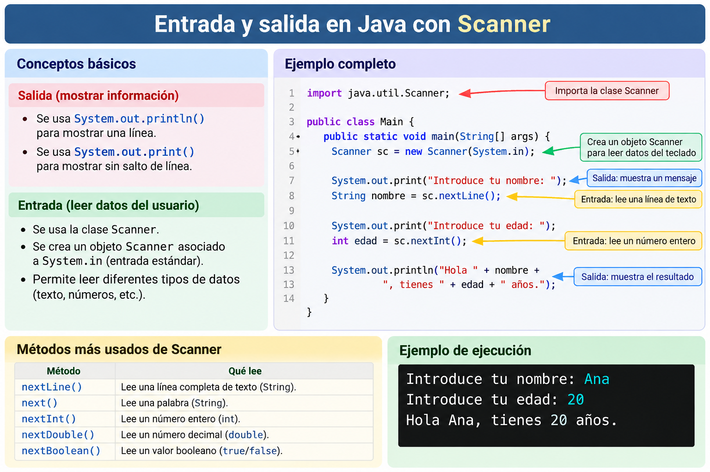

Entrada y salida de datos por consola¶
Java viene con una biblioteca de clases que se puede usar para realizar tareas comunes. La biblioteca de clases de Java está organizada en un conjunto de paquetes, donde cada paquete contiene una colección de clases relacionadas. En esta sección presentamos las clases System y Scanner que se utilizan para imprimir la salida y leer la entrada de un programa.


El tipo más simple de interfaz de usuario es la interfaz de línea de comandos, en la que la entrada se toma de la línea de comandos a través del teclado y la salida se muestra en la consola. Algunas aplicaciones Java utilizan este tipo de interfaz otros usan interfaz gráfica como veremos más adelante.
Salida de la información¶
En Java podemos mostrar información por consola utilizando el objeto System.out.
Los tres métodos que utilizaremos principalmente son:
print()println()printf()
print()¶
El método print() muestra información por consola sin realizar un salto de línea al finalizar.
System.out.print("Hola");
System.out.print(" mundo");
System.out.print("!");
Salida:
Hola mundo!
También podemos mostrar variables:
String nombre = "Laura";
int edad = 19;
System.out.print("Nombre: ");
System.out.print(nombre);
System.out.print(" - Edad: ");
System.out.print(edad);
Salida:
Nombre: Laura - Edad: 19
println()¶
El método println() muestra información y, al terminar, realiza un salto de línea.
System.out.println("Hola");
System.out.println("mundo");
System.out.println("Adiós");
Salida:
Hola
mundo
Adiós
También podemos concatenar texto y variables utilizando el operador +:
String nombre = "Laura";
int edad = 19;
double nota = 8.25;
System.out.println("Nombre: " + nombre);
System.out.println("Edad: " + edad);
System.out.println("Nota: " + nota);
Salida:
Nombre: Laura
Edad: 19
Nota: 8.25
print() frente a println()
La diferencia principal es el salto de línea:
System.out.print("Hola");
System.out.print("mundo");
produce:
Holamundo
mientras que:
System.out.println("Hola");
System.out.println("mundo");
produce:
Hola
mundo
printf()¶
El método printf() permite mostrar información utilizando un formato determinado.
Resulta especialmente útil cuando queremos insertar variables dentro de un texto o controlar cómo se muestran los números.
Por ejemplo:
String nombre = "Laura";
int edad = 19;
System.out.printf("Me llamo %s y tengo %d años.%n", nombre, edad);
Salida:
Me llamo Laura y tengo 19 años.
En este ejemplo:
%sse sustituye por el valor denombre.%dse sustituye por el valor deedad.%nrealiza un salto de línea.
Los elementos como %s, %d o %f reciben el nombre de especificadores de formato.
Especificadores de formato¶
Algunos de los especificadores más utilizados son:
| Especificador | Tipo de dato | Ejemplo |
|---|---|---|
%s |
Cadena de caracteres | "Laura" |
%d |
Número entero | 25 |
%f |
Número decimal | 8.25 |
%c |
Carácter | 'A' |
%b |
Booleano | true |
%n |
Salto de línea |
Ejemplo:
String nombre = "Laura";
int edad = 19;
double nota = 8.25;
char grupo = 'A';
boolean aprobado = true;
System.out.printf("Nombre: %s%n", nombre);
System.out.printf("Edad: %d%n", edad);
System.out.printf("Nota: %f%n", nota);
System.out.printf("Grupo: %c%n", grupo);
System.out.printf("Aprobado: %b%n", aprobado);
Salida:
Nombre: Laura
Edad: 19
Nota: 8.250000
Grupo: A
Aprobado: true
Mostrar números decimales¶
Cuando utilizamos %f, Java muestra por defecto seis cifras decimales:
double precio = 19.95;
System.out.printf("Precio: %f €%n", precio);
Salida:
Precio: 19.950000 €
Podemos indicar cuántos decimales queremos mostrar.
Por ejemplo, para mostrar dos decimales:
double precio = 19.95;
System.out.printf("Precio: %.2f €%n", precio);
Salida:
Precio: 19.95 €
La expresión:
%.2f
significa:
%→ comienza el especificador..2→ muestra dos cifras decimales.f→ número decimal.
Otro ejemplo:
double nota = 8.25678;
System.out.printf("Nota: %.1f%n", nota);
System.out.printf("Nota: %.2f%n", nota);
System.out.printf("Nota: %.3f%n", nota);
Salida:
Nota: 8.3
Nota: 8.26
Nota: 8.257
printf() redondea la representación
Cuando limitamos el número de decimales, printf() redondea el número mostrado.
double nota = 8.256;
System.out.printf("%.2f%n", nota);
muestra:
8.26
Esto no modifica el valor almacenado en la variable nota. Solo modifica cómo se muestra por pantalla.
Mostrar varias variables¶
Una de las principales ventajas de printf() es que permite mostrar varias variables de forma clara:
String nombre = "Laura García";
int edad = 19;
double nota = 8.25;
System.out.printf(
"El alumno %s tiene %d años y una nota de %.2f.%n",
nombre,
edad,
nota
);
Salida:
El alumno Laura García tiene 19 años y una nota de 8.25.
Los valores se sustituyen en el mismo orden en el que aparecen los especificadores:
%s → nombre
%d → edad
%.2f → nota
Ejemplo: datos de un producto¶
String producto = "Teclado";
double precio = 29.95;
int stock = 15;
System.out.printf("Producto: %s%n", producto);
System.out.printf("Precio: %.2f €%n", precio);
System.out.printf("Stock: %d unidades%n", stock);
Salida:
Producto: Teclado
Precio: 29.95 €
Stock: 15 unidades
Ejemplo: calcular un precio¶
String producto = "Monitor";
double precio = 199.99;
int cantidad = 2;
double total = precio * cantidad;
System.out.printf("Producto: %s%n", producto);
System.out.printf("Precio unidad: %.2f €%n", precio);
System.out.printf("Cantidad: %d%n", cantidad);
System.out.printf("Total: %.2f €%n", total);
Salida:
Producto: Monitor
Precio unidad: 199.99 €
Cantidad: 2
Total: 399.98 €
Entrada de la información¶
Se ha agregado la clase Scanner al paquete java.util que permite la entrada de teclado sin forzar el programador para manejar las excepciones. La clase Scanner está diseñada para ser una forma muy flexible de reconocer fragmentos de datos que se ajustan a patrones específicos de cualquier flujo de entrada.
Para usar la clase Scanner para la entrada de teclado, debemos crear una instancia de Scanner y asociarla con System.in. La clase tiene un constructor para este propósito, por lo que la declaración
Scanner sc = new Scanner(System.in);
declara y crea una instancia de un objeto que se puede utilizar para la entrada del teclado. Después de crear un objeto Scanner, podemos hacer una llamada a nextInt(), nextDouble(), o next() para leer, respectivamente, un entero, un número real, o String del teclado.
public static void main(String[] args) {
Scanner sc = new Scanner (System.in);
System.out.print("Introduce un número: ");
int num = sc.nextInt();//Read the integer
System.out.println("El número introducido es: " + num);
}
Cuando se ejecuta el método nextInt(), no se ejecutan más declaraciones hasta que el método devuelve un valor int. Normalmente, esto no sucede hasta que el usuario ha escrito los dígitos de un número entero y presiona la tecla Intro.
Para leer un String utilizamos el método next().
public static void main(String[] args) {
Scanner sc = new Scanner (System.in);
System.out.print("Introduce una palabra: ");
String str = sc.next();
System.out.println(str);
}
System.out.print("Introduce dos números: ");
int num = sc.nextInt();
int num2 = sc.nextInt();
Los espacios en blanco como delimitadores también significan que el método next() no puede devolver una cadena vacía ni puede devolver una cadena que contenga espacios. Por ejemplo, considere el código:
System.out.print("Introduce un texto separado por espacio en blanco: ");
String str = sc.next();
nextLine():
String str = sc.nextLine();
Actividades¶
-
AC 207 (RA1 / CE1e / IC1 / 3p) Escribe un programa que intercambie el valor de dos variables introducidas por entrada
-
AP 208 (RA1 / CE1f CE1i / IC1 / 3p) Crea el siguiente menú utilizando las librerías de entrada/salida (input/output):
Elige una opción: El usuario debe elegir una opción por entrada de teclado. Se le deberá mostrar el número de la opción introducida.*****MENÚ DE SELECCIÓN***** ***** 1. Añadir un entrante.***** ***** 2. Añadir un plato principal.***** ***** 3. Elegir postre.***** ***** 4. No sentarme en este restaurante porque...***** -
PR 209 (RA1 / CE1b CE1c CE1h CE1i / IC2 / 5p) Escribe un programa que solicite tus apellidos, los asigne a variables e intercambie los valores de estas variables. En este caso para asignar valores a las variables de tipo
Stringdeberás emplear el métodonextLine()de la clase Scanner. -
PR 210 (RA1 / CE1b CE1c CE1h CE1i / IC2 / 5p) Escribe un programa llamado
AñoMesDiaque tome como argumento una cantidad de días y calcule a cuántos años, meses y días corresponde. Realiza la suposición de que todos los meses tienen 30 días. -
PR 211 (RA1 / CE1b CE1c CE1h CE1i / IC2 / 5p) Escribe un programa que solicite el valor del lado de un triángulo equilátero (los 3 lados son de igual longitud). Este lado debe almacenarse en una variable de tipo double. El programa calculará el área y el perímetro del triángulo equilátero. El área de cualquier triángulo se calcula mediante la fórmula: á𝑟𝑒𝑎 = (𝑏𝑎𝑠𝑒 × 𝑎𝑙𝑡𝑢𝑟𝑎)/ 2 La altura de un triángulo equilátero se calcula mediante la fórmula: 𝑎𝑙𝑡 = (𝑙𝑎𝑑𝑜 × √3)/ 2. Para calcular la raíz cuadrada se utilizará la expresión
Math.sqrt(número)
PR211
Nota 1: Aunque no se debe mostrar la altura por pantalla, es recomendable guardar su valor en una variable. De esta manera, se simplificará el cálculo posterior del área.
Nota 2: Ante cualquier duda sobre la prioridad de operadores, utiliza los paréntesis. De esta manera te asegurará que el cálculo se realiza correctamente.
- PR 212 (RA1 / CE1b CE1c CE1h CE1i / IC2 / 5p) Escribe un programa llamado
TuCumpleque tome como argumento una cantidad de días y calcule cuantos años tienes desde tu nacimiento. Realiza la suposición de que todos los meses tienen 30 días.